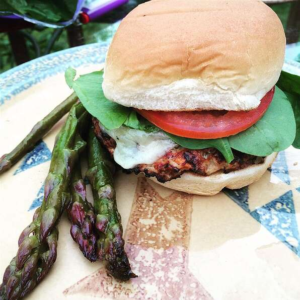

GRILLED CHICKEN BURGER RECIPE

Before we get started you'll need the following ingredients...
LIST OF INGREDIENTS NEEDED
- one onion, chopped
- two teaspoons of minced garlic
- one cup of fresh sliced mushrooms
- one tomato seeded and chopped
- two lbs grounded chicken
- one egg
- half a cup of fresh bread crumbs
- one tablespoon Old Bay (tm) seasoning
- kosher salt --add to your taste
- black pepper
Steps to making a Grilled chicken burger
- preheat an outdoor grill for medium heat and lightly oil grate
- lightly spray a saute pan with butter (2 tablespoons)
saute onion garlic first the pepper, salt, mushroom, and tomatoes
- combine chicken and vegetables. add egg bread crumbs (to a minimum),
mix together then part to eight patties
- Grill over low heat for 6-10 minutes
- enjoy your delicious-grilled-turkey-burger!
to get original recipe click
HERE